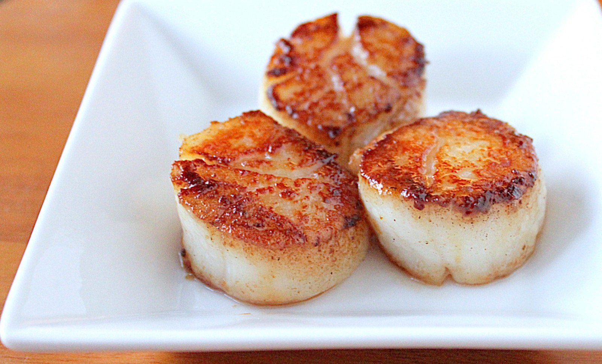
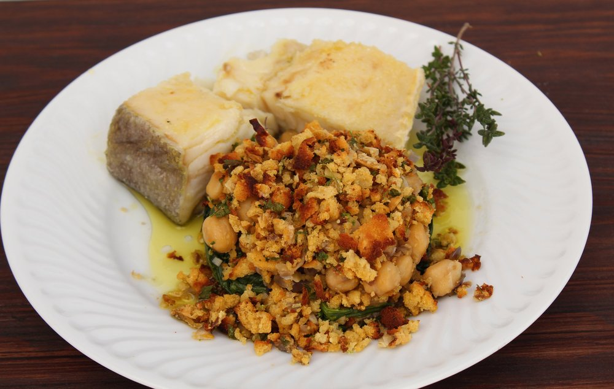
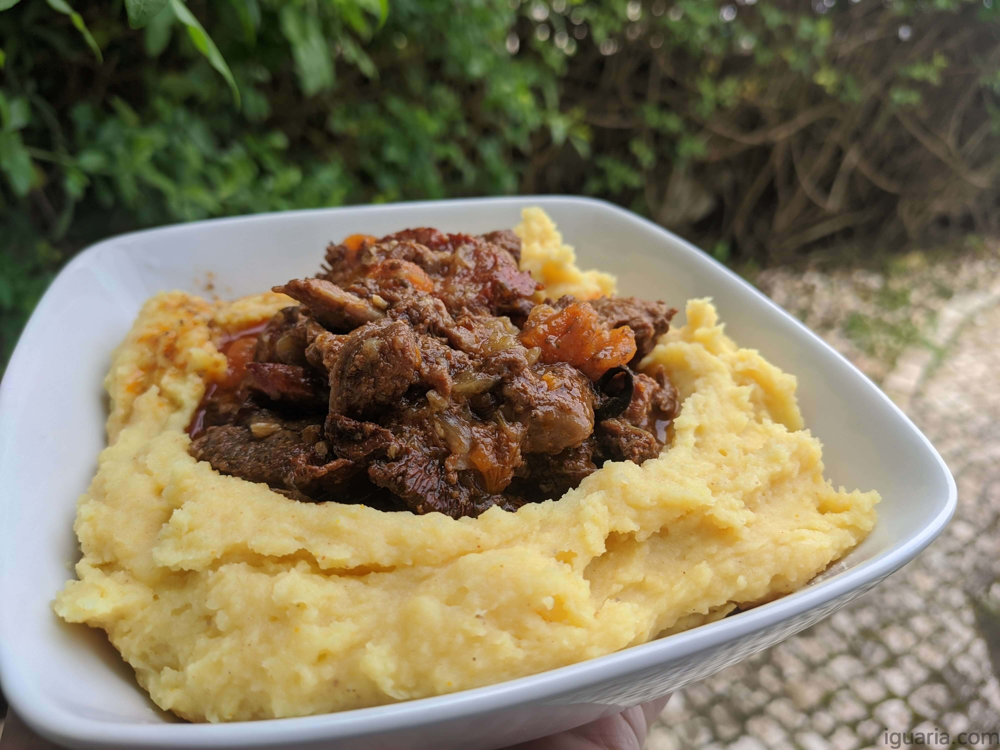

Uma experiência à mesa
Cozinha contemporânea com raízes na tradição portuguesa. Uma viagem sensorial onde cada prato conta uma história.
Reservar MesaDestaques do Menu



Cozinha contemporânea com raízes na tradição portuguesa. Uma viagem sensorial onde cada prato conta uma história.
Reservar Mesa

